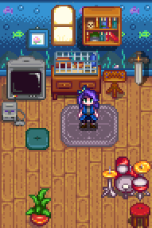

A Casa
A Casa da Fazenda é onde o jogador reside durante todo o jogo. No início do jogo, ele tem apenas um pequeno cômodo que contém uma cama de solteiro, uma lareira, uma TV antiga, várias decorações dependendo do estilo de fazenda que você escolheu e um tapete de piso de desenho variado, que podem ser alterados e expandidos posteriormente. A lareira pode ser movida com um clique com o botão esquerdo ou ligada com um clique com o botão direito.
Pisos e Papéis de Parede podem ser alterados usando modelos. Novos móveis podem ser adicionados a qualquer momento.
Atualizações podem ser comprados na Carpintaria. Cada novo quarto adicionado quando atualizado pode ter seus próprios padrões de Pisos e Papel de parede.
Atualizações

1º Estagio
10 000 ouro
Madeira (450)
Adiciona uma cozinha, com um balcão de cozinha que permite cozinhar, e um frigorífico que funciona como um baú. Itens no frigorífico podem ser usados para cozinhar, mesmo que eles não estejam no inventário do jogador. Adiciona um quarto. Atualiza cama de solteiro para dupla. Permite casar.

2º Estagio
65 000 ouro
Madeira de lei (100)
Adiciona dois novos quartos, um vazio, e um com um berço e duas camas de solteiro, permitindo que você tenha filhos. Cozinha e quarto são maiores.

3º Estagio
100 000 ouros
Adiciona um porão sob a casa, permitindo o acesso através da cozinha. Os barris de madeira no porão podem envelhecer queijo e bebidas para aumentar sua qualidade e valor.
Ao se casar ou ter outro personagem se mudando para a casa da fazenda, o jogo adiciona automaticamente uma sala extra que é baseada no estilo do personagem.
Quarto dos Cônjuges



Conquistas
Existem 2 Conquistas relacionadas a Casa da Fazenda.
- Subindo de vida (Atualize sua casa)
- Grande vida (Atualize sua casa pela segunda vez)
Não existe uma conquista para atualizar a casa pela terceira vez (que adiciona o porão).
A Caverna
Depois que você acumular 25 000 ouros no total de ganhos, Demetrius vai visitar a Fazenda e informá-lo que ele gostaria de usar a caverna para criar espécimes de pesquisa. Ele vai dar-lhe a opção de escolher entre morcegos frutíferos(que deixam fruta na caverna) ou cogumelos. Essa escolha é permanente e não pode ser revertida.
Morcegos
Os morcegos de frutas deixam várias frutas na Caverna em sua fazenda. Esta é uma ótima opção para fazer Mercadorias Artesanais, pois dá uma lenta, mas constante oferta de frutas mesmo fora de época. Ele também ajuda a completar o Conjunto Artesão na Copa no primeiro ou segundo ano, antes de você ter dinheiro suficiente para comprar todas as Árvores frutíferas necessárias.
Frutas de Árvore Frutífera fazem excelentes presentes para os aldeões porque eles são de gosto universal, prontamente acessível no início do jogo, e não exigem uma cozinha. Presentear pode ser o melhor uso de final de jogo para frutas, além de fazer Mercadorias Artesanais, entregá-los, acabar os Conjuntos, ou comê-los por energia extra.
Há uma chance de surgir uma nova fruta a cada noite. Se a caverna estiver vazia, tem uma chance de 48% de não aparecer nenhuma fruta nova; 25% de 1 fruta; 7% de 4 ou mais. Em média surge 1,06 frutas por noite. O limite máximo de frutas que podem aparecer em uma noite são 50.
As frutas que aparecem na caverna permanecem lá até que o jogador a colete e não desaparecem mesmo no fim da semana ou do mês. Frutas não coletadas reduzem o espaço disponível para novas frutas surgirem. Por exemplo, dez frutas não coletadas aumentam a chance de nenhuma fruta nova surgir de 48% para 54%. Colocar equipamento ou piso na caverna também reduzem o espaço disponível para novas frutas.
Cogumelos
Seis caixas serão adicionadas à caverna onde certos tipos de cogumelos crescerão aleatoriamente. Cinco tipos diferentes aparecerão, incluindo os quatro que são necessários para elaborar o Elixir da vida. Isto faz a opção do cogumelo ser ótima para aqueles que amam entrar nas minas, especialmente desde que a maioria dos cogumelos podem ser difíceis de encontrar de outra maneira.
Cogumelos da caverna podem ser colhidos diariamente, mas nunca mais de uma vez por dia. As seis caixas começam a gerá-las na manhã seguinte, quando Demetrius as prepara, e novamente todas as manhãs após uma colheita. O tempo aparente de crescimento é de 10 horas (precisa ser verificado), portanto, novos cogumelos não estarão disponíveis até depois das 16 horas. Como as colheitas, os cogumelos que estão prontos para a colheita permanecem intocados até que sejam colhidos. Se o jogador colher os cogumelos existentes antes das 7 AM, ainda não haverá mais disponível até às 4 PM do dia seguinte. Assim, se o jogador vai para a cama sem colher cogumelos que estão prontos, a produção de um dia é perdida.
A Estufa
A estufa é um edifício presente na fazenda desde o início. No entanto, inicialmente está em um estado de degradação, tornando-o inutilizável.
O edifício pode ser reparado completando os conjuntos da Copa para o Centro Comunitário, ou comprando-o por 35 000 ouros através do Formulário de Melhorias Comunitárias Joja.
Lavouras cultivadas dentro da estufa não estão sujeitas a restrições de estação, permitindo que você produza a maioria das plantas e árvores frutíferas, independentemente da época do ano.
Informações
O interior do edifício apresenta um lote de 10 por 12 para as lavouras, e uma calha para reabastecer seu Regador (embora, apenas o lado direito da calha pode ser usado).
Espantalhos não são necessários na estufa para evitar corvos de comer lavouras.
Lavouras e árvores frutíferas nunca serão atingidas por relâmpagos.
Fertilizante na estufa vai durar uma estação.
As árvores frutíferas podem ser cultivadas na área de azulejos fora da borda de madeira que circunda o solo.
Os apiários não produzirão mel dentro da estufa.
Otimização
Melhor layout de estufa: